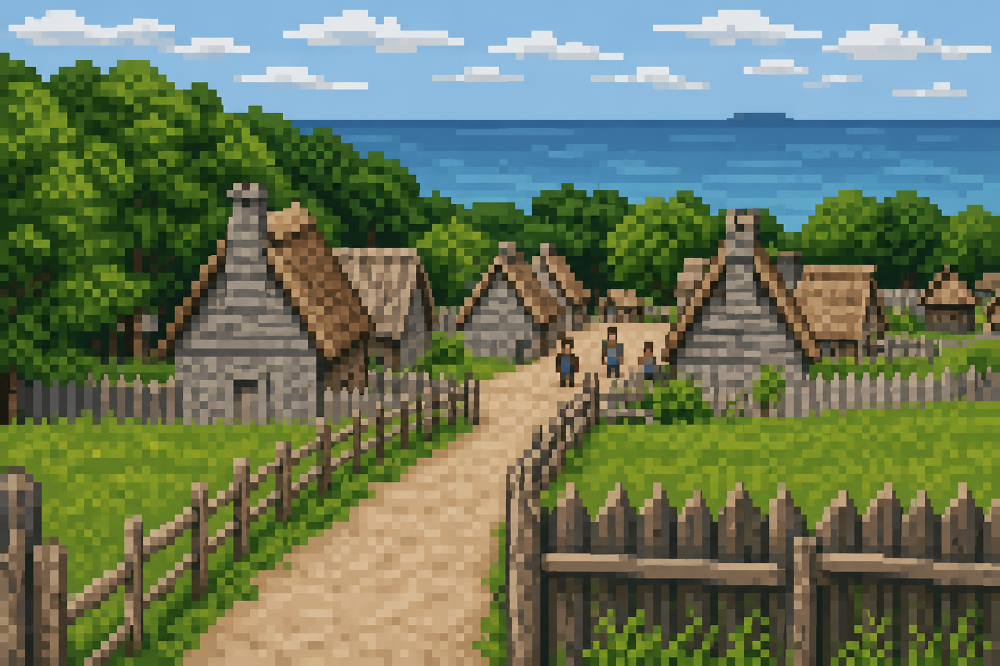
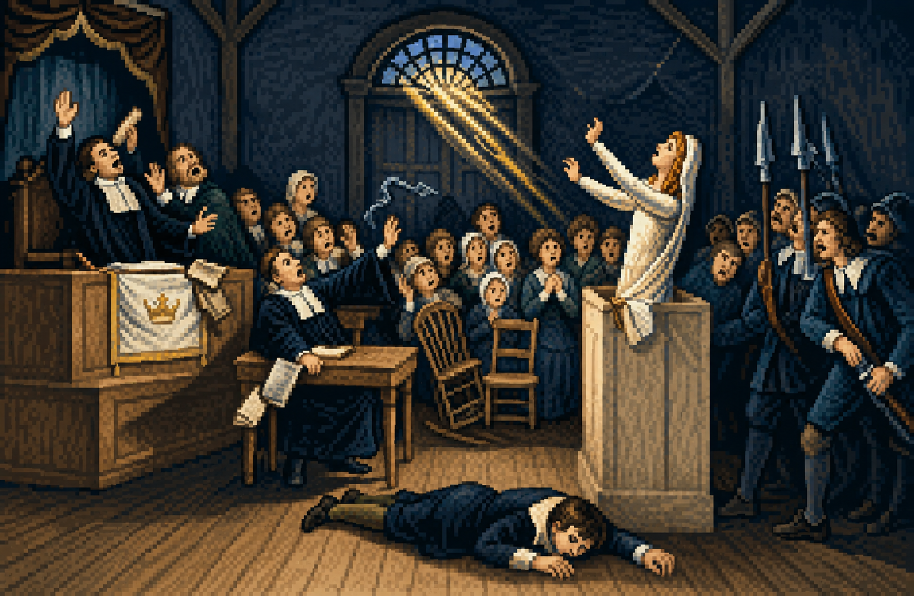
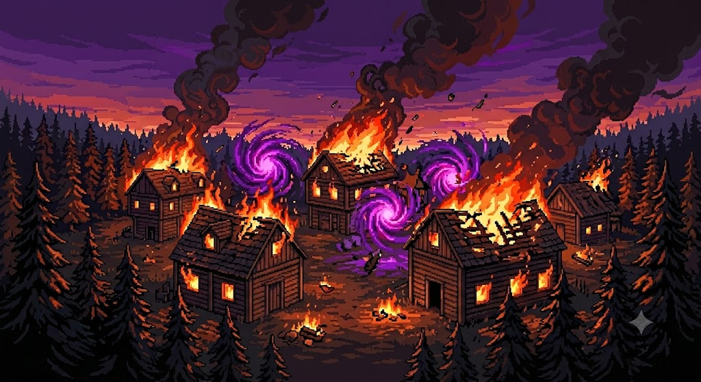

DE LAS NIEVES A LA CENIZA
Mucho antes de convertirse en Catherine White, la protagonista nació en Arjánguelsk, una ciudad portuaria del norte de Rusia, bajo el nombre de Ekaterina Vasiliev.
Su padre era un estudioso obsesionado con antiguos textos relacionados con Hécate, una deidad vinculada a encrucijadas, caminos de luz, magia, fantasmas, necromancia y hechicería. Su madre, Vera Orlova, era una madre devota, cariñosa con su esposo e hija, pero capaz de una gran destreza y fuerza para la caza y la pesca, habilidades que desarrolló para sobrevivir en el clima extremo del norte de Rusia.
Vera nunca creyó en las obsesiones místicas de su esposo. Para ella, el mundo real ya era lo suficientemente peligroso. Por eso, desde muy temprano, entrenó a Ekaterina en el uso del arco largo y la flecha, enseñándole a cazar en la taiga congelada y a confiar sólo en su puntería y sus propios instintos de supervivencia física.

EL FIN DE LA TRANQUILIDAD Y EL DESTINO
La tranquilidad de la familia terminó abruptamente cuando el padre de Ekaterina fue acusado de brujería por las autoridades locales rusas tras descubrir sus textos prohibidos. Fue arrestado y, presuntamente, ejecutado. Antes de ser capturado, logró entregarle a Vera sus manuscritos con una última advertencia.
Presas del pánico, Vera y Ekaterina huyeron de Rusia cruzando el océano hacia el Nuevo Mundo. Al llegar a las colonias de Massachusetts, decidieron enterrar su pasado para evitar sospechas. Vera Orlova cambió su nombre a Veronica White, y Ekaterina Vasiliev pasó a ser Catherine White.
Sin embargo, el destino las alcanzó. Veronica fue acusada formalmente de brujería por los ministros religiosos locales y condenada a morir en la hoguera. Durante la ejecución, el dolor y trauma actuaron como un violento catalizador que despertó los poderes de Catherine por primera vez. Perdiendo el control, desató una explosión de magia violeta inestable que provocó un incendio masivo en la aldea y destruyó cualquier rastro físico de su madre.

LA PROFECÍA DE HÉCATE
Consumida por una culpa asfixiante por haber provocado la tragedia de forma indirecta y no haber podido salvar a su madre, Catherine huyó hacia las profundidades de los bosques neblinosos de Massachusetts. Sola, viviendo en estado salvaje gracias al arco de su madre, comenzó a estudiar en secreto los manuscritos rescatados de su padre.
Allí descubrió la profecía de Hécate: el poder oculto de la Triple Diosa que le permitiría, supuestamente, revivir a sus padres si logra invocar y unificar los espíritus de tres deidades: Artemisa, Selene y Perséfone. Con ayuda de dos jóvenes brujas que también huyen de sus enemigos en común, forma un aquelarre y van en busca de cumplir la profecía formando el aquelarre de Hécate.
